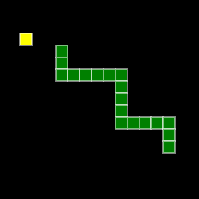
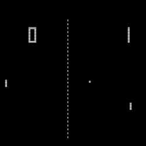

Snake

Snake is the common name for a video game concept where the player maneuvers a line which grows in length, with the line itself being a primary obstacle.
The concept originated in the 1976 arcade game Blockade, and the ease of implementing Snake has led to hundreds of versions (some of which have the word snake or worm in the title) for many platforms.
After a variant was preloaded on Nokia mobile phones in 1998, there was a resurgence of interest in the snake concept as it found a larger audience.
There are over 300 Snake-like games for iOS alone.
Play it here »
Pong

Pong is one of the earliest arcade video games.
It is a table tennis sports game featuring simple two-dimensional graphics.
The game was originally manufactured by Atari, which released it in 1972.
Allan Alcorn created Pong as a training exercise assigned to him by Atari co-founder Nolan Bushnell.
Bushnell based the idea on an electronic ping-pong game included in the Magnavox Odyssey, which later resulted in a lawsuit against Atari.
Surprised by the quality of Alcorn's work, Bushnell and Atari co-founder Ted Dabney decided to manufacture the game.
Play it here »
Hangman

Hangman is a paper and pencil guessing game for two or more players.
One player thinks of a word, phrase or sentence and the other tries to guess it by suggesting letters or numbers, within a certain number of guesses.
Play it here »